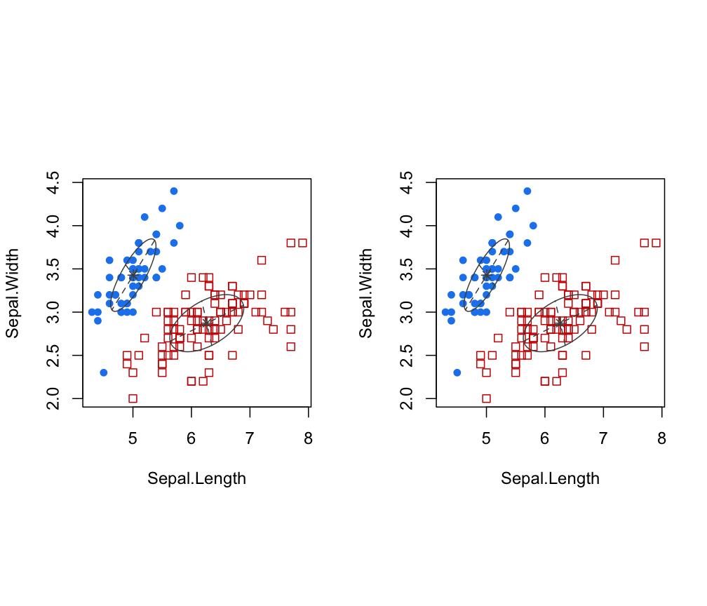
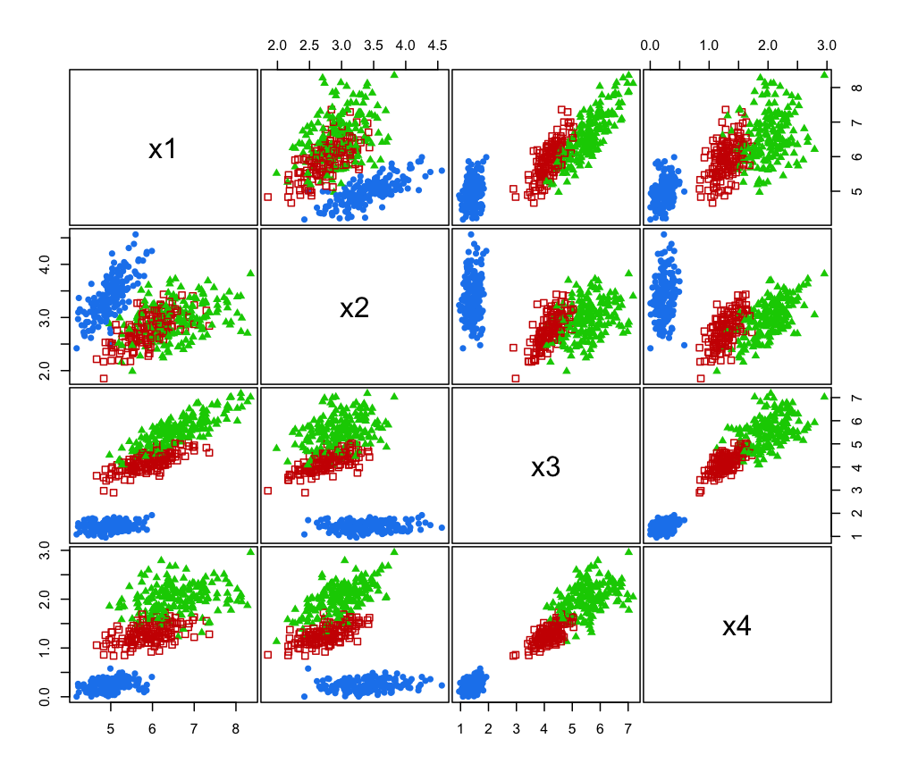

sim.RdSimulate data from parameterized MVN mixture models.
sim(modelName, parameters, n, seed = NULL, ...)
| modelName | A character string indicating the model. The help file for
|
|---|---|
| parameters | A list with the following components:
|
| n | An integer specifying the number of data points to be simulated. |
| seed | An optional integer argument to |
| … | Catches unused arguments in indirect or list calls via |
A matrix in which first column is the classification and the remaining
columns are the n observations simulated from the specified MVN
mixture model.
"modelName" A character string indicating the variance
model used for the simulation.
This function can be used with an indirect or list call using
do.call, allowing the output of e.g. mstep, em,
me, Mclust to be passed directly without the need to
specify individual parameters as arguments.
#> [1] "modelName" "n" "d" "G" "bic" #> [6] "loglik" "parameters" "z"# NOT RUN { do.call("sim", irisModel) # alternative call # }par(pty = "s", mfrow = c(1,2)) dimnames(irisSim) <- list(NULL, c("dummy", (dimnames(iris)[[2]])[-5])) dimens <- c(1,2) lim1 <- apply(iris[,dimens],2,range) lim2 <- apply(irisSim[,dimens+1],2,range) lims <- apply(rbind(lim1,lim2),2,range) xlim <- lims[,1] ylim <- lims[,2] coordProj(iris[,-5], parameters=irisModel$parameters, classification=map(irisModel$z), dimens=dimens, xlim=xlim, ylim=ylim) coordProj(iris[,-5], parameters=irisModel$parameters, classification=map(irisModel$z), truth = irisSim[,-1], dimens=dimens, xlim=xlim, ylim=ylim)irisModel3 <- mclustModel(iris[,-5], irisBIC, G=3) irisSim3 <- sim(modelName = irisModel3$modelName, parameters = irisModel3$parameters, n = 500, seed = 1)# NOT RUN { irisModel3$n <- NULL irisSim3 <- do.call("sim",c(list(n=500,seed=1),irisModel3)) # alternative call # }